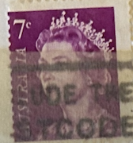
| SOURCE | TITLE| IMAGE MATCH | click to source page |
| eBay | VERY RARE STAMPS AUSTRALIA 7c 0012 | eBay | 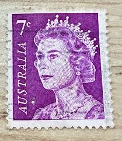 |
| eBay UK | Australia Queen Elizabeth II Stamp 7c Australian Stamp | eBay UK | 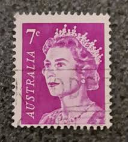 |
| Todocolección | australia - año 1937 - ave - kookaburra art - y - Buy Antique stamps of Australia on todocoleccion | 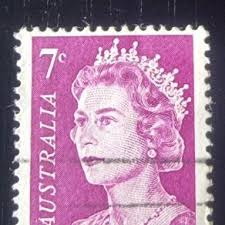 |
| ebid.net | Netherlands 2001 Numeral 0,39€ Used Stamp Standard Letter on eBid United States | 217343099 | 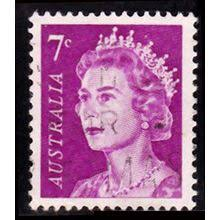 |
| eBay | Purple Used Australian Stamps for sale | eBay | 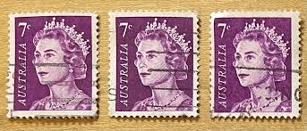 |
| eBay | Royalty Decimal 1p British Stamps for sale | eBay | 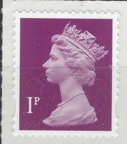 |
| Linns Stamp News | IGPC announces forthcoming Queen Elizabeth II memorial stamp issues | 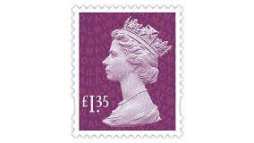 |
| eBay | AUSTRALIA 402A (SG388a) - Queen Elizabeth II "1971 Deep Rose Lilac" (pa95443) | eBay | 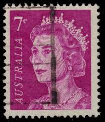 |
| eBay | 1p British Decimal Stamps for sale | eBay | 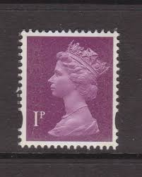 |
| Your Songs Collectibles | Great Britain / 1992 | Standard Bearer - The Civil War 1642-51 | Postage Stamp | 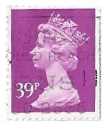 |
| Stamp Auction | Prices Realized | 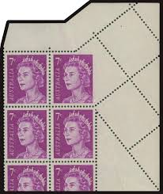 |
| Blogger.com | Gem's World Postcards: January 2011 | 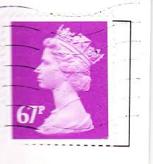 |
| eBay | Australia 1966 7c Queen Elizabeth II Used Postal stamp | eBay | 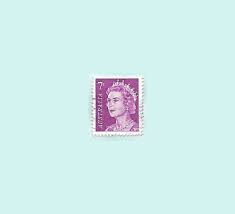 |
| eBay UK | 10 Number Great Britain Elizabeth II Machin Definitive Stamps for sale | eBay UK | 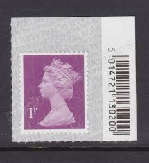 |
| Dreamstime.com | Postage stamp. editorial photo. Illustration of great - 18189276 | 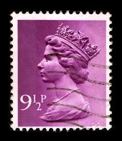 |
| Osta.ee | Suurbritannia " ELIZABETH II " 1991 (247949227) - Osta.ee | 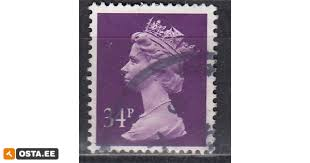 |
| Dreamstime.com | 5,886 Queen Violet Stock Photos - Free & Royalty-Free Stock Photos from Dreamstime | 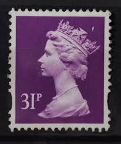 |
| eBay UK | 5 Stamps 5 Stamps British Elizabeth II Stamps for sale | eBay UK | 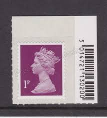 |
| Alamy | United Kingdom Postage Stamp 34p, Machin Stock Photo - Alamy | 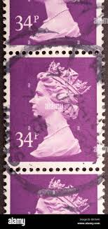 |
| eBay | GB MINT Machin Lithographic Elliptical Y1760-Y1803 MNH - multiple listing | eBay | 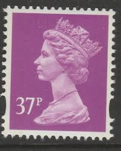 |
| eBay | 1974 35c Rate 7c QEII Queen Elizabeth x 5 Australia Air Mail Cover to FINLAND | eBay | 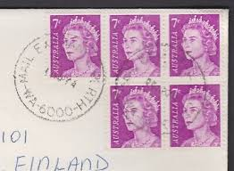 |
| eBay | British Elizabeth II Stamps £ 3 Denomination for sale | eBay | 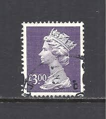 |
| Collect GB Stamps | Definitive (1996) : Collect GB Stamps | 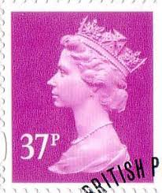 |
| HipStamp | Great Britain MH157: 39p Queen Elizabeth II, used, VF | Great Britain, Back of Book (Other) - Machin Head Stamp / HipStamp | 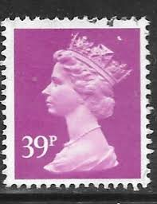 |
| GB Stampline | Machin Date Blocks - GB Stampline | 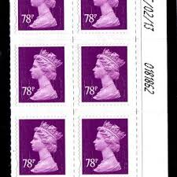 |
| Glen Stephens Stamps | MASSIVE new Brusden White / ACSC, "Australian Postal Stationary" colour catalogue just published. | 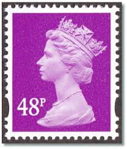 |
| HipStamp | Great Britain, Scott #MH270A, used(o), 2000, Machin: Queen Elizabeth II, 45p | Great Britain, Back of Book (Other) - Machin Head Stamp / HipStamp | 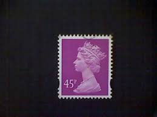 |
| eBay | Great Britain 1989 29p Purple Photo. Phos. Paper MNH SG X979 | eBay | 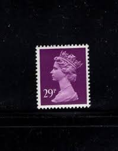 |
| eBay | 2 GB USED ERROR/VARIETY 1p SECURITY MACHIN STAMPS PINK HEAD/WHITE HEAD & U-SLIT | eBay | 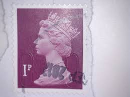 |
| csdastampauctions.com | Great Britain Sc MH363 2007 48p bright rose lilac Machin Head stamp mint NH | 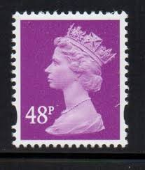 |
| eBay | Pink British Elizabeth II Stamps for sale | eBay | 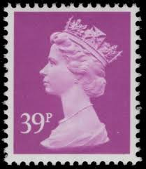 |
| eBay UK | Royalty Decimal 1 Number Great Britain Elizabeth II Machin Definitive Stamps for sale | eBay UK | 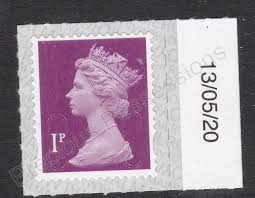 |
| Shutterstock | United Kingdom Circa 1990 English Used Stock Photo 70507564 | Shutterstock | 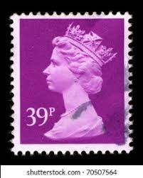 |
| Etsy | Stamp Art, Purple, Queen Elizabeth II, Machin, Great Britain, Used Stamps, 3d - Etsy | 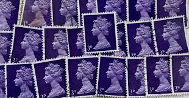 |
| HipStamp | Great Britain, 31p Machin, (SC# MH260) Used | Great Britain, Back of Book (Other) - Machin Head Stamp / HipStamp | 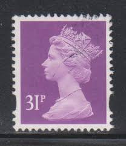 |
| eBay UK | Football Great Britain Elizabeth II Machin Definitive Stamps for sale | eBay UK | 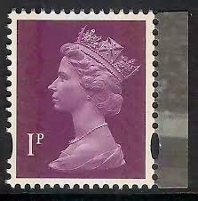 |
| Dreamstime.com | 6,930 Elizabeth Ii Stock Photos - Free & Royalty-Free Stock Photos from Dreamstime | 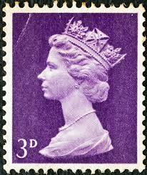 |
| Todocolección | gran bretaña 1994 - sg nro. 1796 - usado - Buy Antique stamps of United Kingdom on todocoleccion | 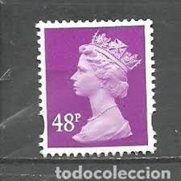 |
| Shutterstock | 72 Pink Queen Postal Stamp Royalty-Free Images, Stock Photos & Pictures | Shutterstock | 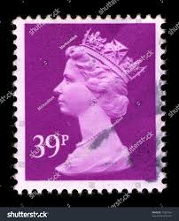 |
| Shutterstock | 17+ Thousand Queen Stamp Royalty-Free Images, Stock Photos & Pictures | Shutterstock | 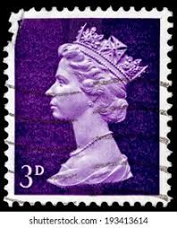 |
| Amazon UK | TGBCH 31p Stamps Unfranked Collectable (Purple 31p (March 30 1983)) : Amazon.co.uk: Outlet | 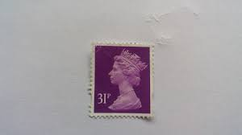 |
| Flickr | beautiful stamp GB 88p Machin Queen Elizabeth lilac Great … | Flickr | 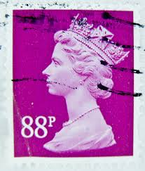 |
| eBay | 1993-2017 Machin Definitives Y Series Elliptical Multiple Listing Unmounted Mint | eBay | 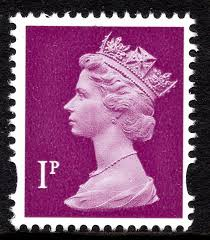 |
| Alamy | UNITED KINGDOM - CIRCA 1980: Postage stamp printed in England shows a portrait of Queen Elizabeth II circa 1980 Stock Photo - Alamy | 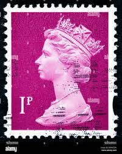 |
| earsathome.com | something strange in Scotland. | 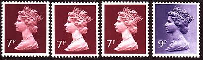 |
| Blogger.com | Machin Mania: April 2012 | 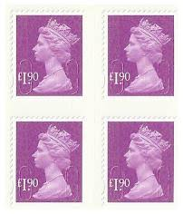 |
| eBay | GB Machin Definitive Purple £3.00 M19L horz pair (Walsall) MNH 2019 | eBay | 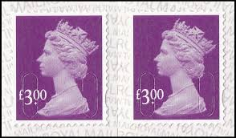 |
| eBay | GREAT BRITAIN STAMP QUEEN ELIZABETH II QE II 31p BRITISH PENNY PURPLE MH/VF USED | eBay | 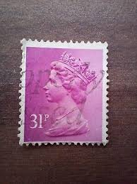 |
| PicClick AU | AUSTRALIA QUEEN ELIZABETH II Stamp 7c Australian Stamp $13.50 - PicClick AU | 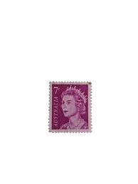 |
| eBay | GREAT BRITAIN MH199 - Queen Elizabeth II "1993 Magenta" (pf62335) | eBay | |
| Anyone know what Perfin this is?? : r/philately | ||
| eBay UK | Bullseye/SOTN Great Britain Elizabeth II Decimal Stamps (1971-Now) for sale | eBay UK | |
| eBay | GB Machin Definitive Purple £3.00 M19L vert pair (Walsall) MNH 2019 | eBay | |
| HipStamp | GREAT BRITAIN 1981 QEII 25p Purple Machin Pair SGX970 FU | Great Britain, Stamp / HipStamp | |
| eBay | Red Used British Elizabeth II Stamps for sale | eBay | |
| Gumtree | Sold) 18 Sheets of 1p stamps | in Failsworth, Manchester | Gumtree | |
| eBay | GREAT BRITAIN SG-X991, SCOTT # MH156 MACHIN, USED, 3 STAMPS, GREAT PRICE! | eBay | |
| HipStamp | Great Britain, Scott #MH260, used(o), 1997 Machin: Queen Elizabeth II, 31p | Great Britain, Back of Book (Other) - Machin Head Stamp / HipStamp | |
| HipStamp | Great Britain #MH5 3p Queen Elizabeth II | Great Britain, General Issue Stamp / HipStamp | |
| Albany Stamps | machin stamps | GB Stamps | Albany Stamps |